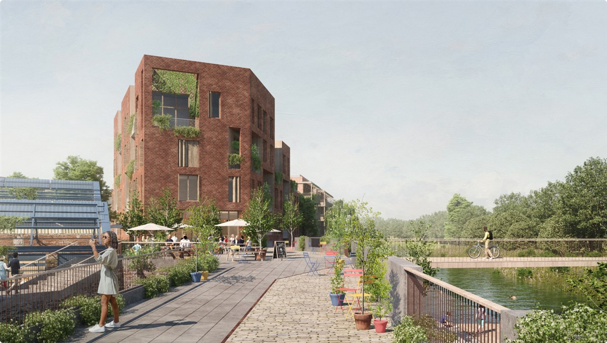

The Phoenix, Lewes (Credit: Human Nature with Periscope)
ON SOURCE: PLEASE VISIT HERE TO READ THE FULL STORY ON THE PHOENIX INTERACTIVE WEBSITE
The Phoenix is a sustainable neighbourhood on a former industrial site in Lewes, East Sussex
“This looks like the beginning of the future”
Visitor to the Design Festival
The Phoenix is the redevelopment of a 7.9 hectare brownfield site within the South Downs National Park, brought forward by Human Nature, a campaigning development company, working with some of the UK’s leading architects, designers and engineers. It seeks to turn the imperatives of the climate and natural emergencies into opportunities for better design, better placemaking and ultimately healthier and better living.
Planned to prioritise people over cars, constructed primarily in sustainable timber, powered by renewable energy and designed to encourage a culture of sharing, it represents a new and regenerative way to make a place, build a community and create a productive and circular local economy.
The development will transform a neglected former industrial site into a beautiful green place, providing much-needed homes and jobs, community spaces, a river walk, flood defences and health centre. At the heart of the neighbourhood will be a series of public squares connecting to a community canteen, event hall, taproom, fitness centre, workspace and makers’ studios, much of which will be housed within repurposed industrial structures. Shared courtyards, parks, green corridors and rooftop gardens will enable social interaction, promote communal living and provide habitats for local wildlife.
The masterplan for the Phoenix comprises 18 different housing blocks designed by 12 different architects (see Team), giving the neighbourhood diversity, character and housing choice.
ON SOURCE: PLEASE VISIT HERE TO READ THE FULL STORY ON THE PHOENIX INTERACTIVE WEBSITE
